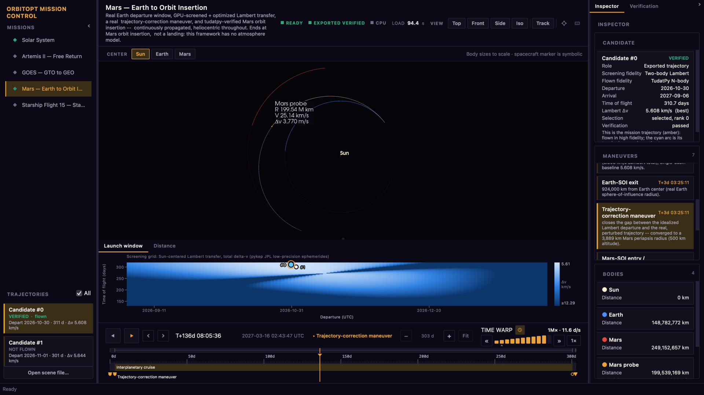
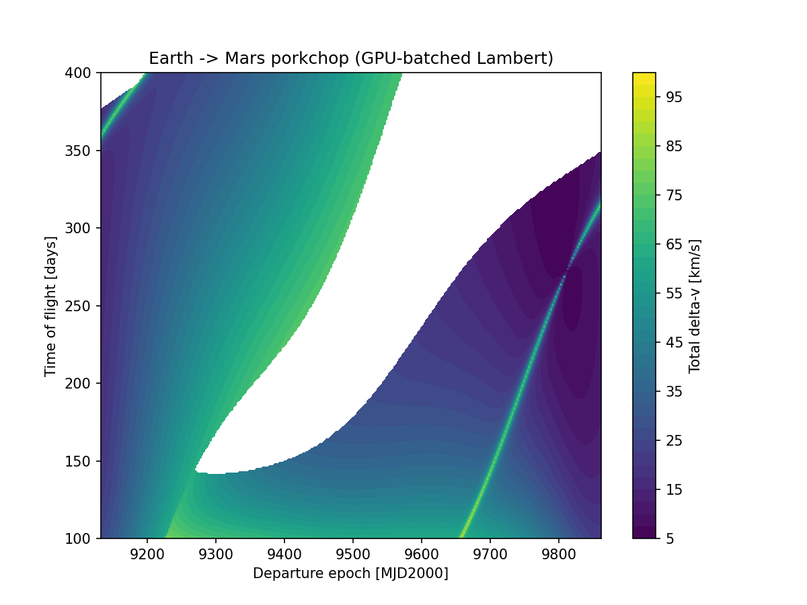

orbitopt pairs pykep + pygmo's cheap, population-based search
with tudatpy's high-fidelity numerical propagation — CUDA-batched
where it counts — to find and confirm real trajectories, from the
launch pad and its daily window through injection, cruise and orbit insertion.
A cheap optimizer sweeps the whole search space, real-world launch limits prune it, a numerical propagator re-flies only the survivor, and a machine-readable report says whether it held.
Patched-conic Lambert arcs and gravity-assist sequences, swept by population optimizers. Multi-basin multistart optimizes every distinct porkchop valley instead of shrinking onto one.
Vehicle C3-vs-payload curves and the site's reachable declination enter the fitness. Daily launch windows respect range-safety azimuth corridors, and every number cites its source.
Adaptive RKDP8(7) N-body propagation with dense-output event location. Parking orbit → TLI/TMI under J2, Newton and B-plane targeters close the gap to the real trajectory.
Every run writes a schema-validated report: step convergence, conservation, residuals, the force model actually used, and a pass/fail per check.
orbitopt.core.gpu).
Perseverance lifted off from Cape Canaveral SLC-41 at 11:50 UTC on 30 July 2020. Given ephemerides, a launch-site database and a rocket performance curve, this is what orbitopt reconstructs, end to end.
From the lift-off row on, the real departure date and the 203.4-day flight time are inputs; the time of day is the prediction. The rocket model is Atlas V 551 (the database has no 541) carrying 4,037 kg.
Windows from KSC into the departure asymptote (RLA 9.5°, DLA 23.6°), limited to the Eastern Range's 35°–120° azimuth corridor.
Launch constraints are part of the optimizer's fitness, not a post-hoc filter. Same 4,037 kg payload on every vehicle in the database.
Full tudatpy cruise under Sun, Earth, Mars and Jupiter gravity. The correction burn is targeted in the B-plane, so the periapsis itself hits the target.
Every mission — built-in or your own — is the same SceneData
JSON document, opened by the same PyVista/PySide6 renderer: Mission Control.
Live heliocentric snapshot of the Sun and eight planets — real 2K textures, true sidereal spin rates, positions from pykep ephemerides.
Lambert-seeded, B-plane and entry-corridor targeted Earth–Moon free return, verified in tudatpy. Artemis II's perilune is the target input and the departure date is chosen; this is not a reconstruction of the flown trajectory.
Real Atlas V/Centaur launch-to-GTO profile, continuously propagated through an optimized minimum-burn-count apogee-raising campaign.
Lambert-optimized departure, a full N-body cruise with a B-plane-targeted correction burn, and capture into an elliptical Mars orbit.
Daily open, close and optimal lift-off times from a sourced launch-site database, into an orbit plane or along an interplanetary asymptote.
orbitopt validate / orbitopt run: describe a GEO-raising
or Mars-transfer mission in YAML, get a verified scene and its report.

Speedup grows with batch size — GPU kernel-launch overhead dominates at small N, so a batched routine only pays off once the batch is large enough to amortize it. That threshold is measured per-routine.
4.7×
# 2,000,000 independent Lambert solves — 82.8s CPU (24.2k/s) → 17.7s GPU (112.8k/s), RTX A3000 Laptop 6GB

examples/04_porkchop_gpu.pyReading and viewing a scene someone already computed doesn't need pykep, pygmo, or tudatpy — the package is split so that's true in practice, not just in principle.
pip install orbitopt — stdlib + jsonschema only.
read_scene / write_scene / validate_scene
against a versioned, independent JSON Schema.
pip install orbitopt[viewer] — real PyPI wheels (numpy,
PyVista, PySide6). Opens any scene file, yours or a colleague's.
pykep + pygmo + tudatpy ship only on conda-forge/tudat-team. Fully pinned
conda-lock files build it: envs/cpu.conda-lock.yml, or
envs/gpu.conda-lock.yml with CuPy on CUDA 13.
# src/orbitopt/ core/ gpu.py, problem.py # numpy/cupy switch, pygmo UDP base lambert/ gpu_batch.py, cpu.py # batched + reference Izzo solvers dynamics/ nbody_gpu.py # GPU-batched coarse Earth-Moon propagator problems/ transfer_2body.py, mga.py free_return.py, geo_raising.py optimize/ gpu_bfe.py, runner.py # pygmo + custom batch fitness evaluator multistart.py # one optimizer per porkchop valley launch_*.py sites, vehicles, # sourced data, C3/DLA constraints, constraints, windows # daily launch windows injection.py # pad -> parking orbit -> TLI/TMI, verified verify/ tudat_propagate.py, events.py differential_correction.py, b_plane.py geo_insertion.py, mars_insertion.py report.py # schema-validated verification reports viz/ scene_renderer.py # one PyVista draw path, every scene app.py # Mission Control (PySide6 + pyvistaqt) state.py, charts.py # shared selection/time, linked 2D charts solar_system.py, mission_timeline.py geo_raising.py, mars_transfer.py, porkchop.py mission_config.py # YAML config -> validated -> built scene missions.py # named-mission registry + plugin entry points scene_format.py # the format's entire read/write/validate surface
Root-caused and measured, not smoothed over. Longer write-ups for the
early ones live in docs/engineering-notes.md.
Attach bfe before wrapping. It has to go on the raw UDA
(uda.set_bfe(bfe)) before pg.algorithm(uda).
Attaching it after silently falls back to evaluating one candidate at a
time — ~15× slower, no error raised anywhere.
J2000 ≠ ECLIPJ2000. They're related by Earth's
~23.4° obliquity and aren't interchangeable — mixing states queried in
one against the other silently produces errors of hundreds of
thousands of km.
Fine for a coast, not for a flyby. A 600s step reported an 81,733 km closest lunar approach for a trajectory whose true, converged (≤15s step) closest approach was 4,379 km.
The 2020 replay flew below the surface of Mars. The correction burn aimed the spacecraft at a point 3,889.5 km from Mars's center at a fixed time. Gravity bends the approach inward, so the real periapsis came out at 3,341 km, under Mars's 3,389.5 km radius, and the report still passed. A second targeting stage now solves for the B-plane vector with the arrival time held fixed, and the flown periapsis lands at 504.7 km altitude.
An energy drift that wasn't there. The orbit-insertion conservation check computed energy with SPICE's Mars GM while tudat integrated with its own, 1.9×10⁻⁸ apart. On an e = 0.75 capture orbit that reads as a 1.2×10⁻⁷ drift, which failed every run. The tell: angular momentum, which doesn't involve GM, drifted only 10⁻¹³. With the integrator's own GM the drift is 2×10⁻¹².
No source edits: describe a mission's orbit elements, spacecraft, and optimizer settings, then validate and run it from the command line.
# view any scene -- no conda, real PyPI wheels only pip install orbitopt[viewer] orbitopt view solar-system # describe a mission -- no source edits cat my_mission.yaml mission: id: my-geo-mission title: My GEO raising campaign kind: geo-raising target: geostationary_longitude_deg: -101.0 campaign_search: n_burns: { min: 2, max: 6 } output: scene_file: scenes/my-geo-mission.json # schema-check, then optimize + tudatpy-verify + write scene and report orbitopt validate my_mission.yaml orbitopt run my_mission.yaml orbitopt view scenes/my-geo-mission.json # daily launch windows from KSC along the Mars 2020 departure asymptote orbitopt launch-window ksc --rla 9.6 --dla 23.4 --epoch 2020-07-30 --azimuth 90 115
Every field falls back to the real GOES-16 numbers if omitted — the minimal config just re-derives the built-in mission. See the full config schema on GitHub.